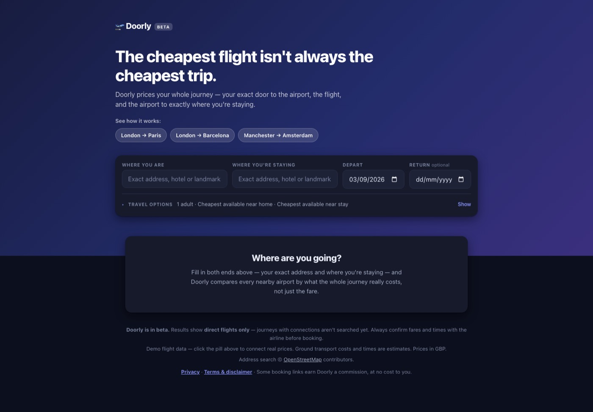
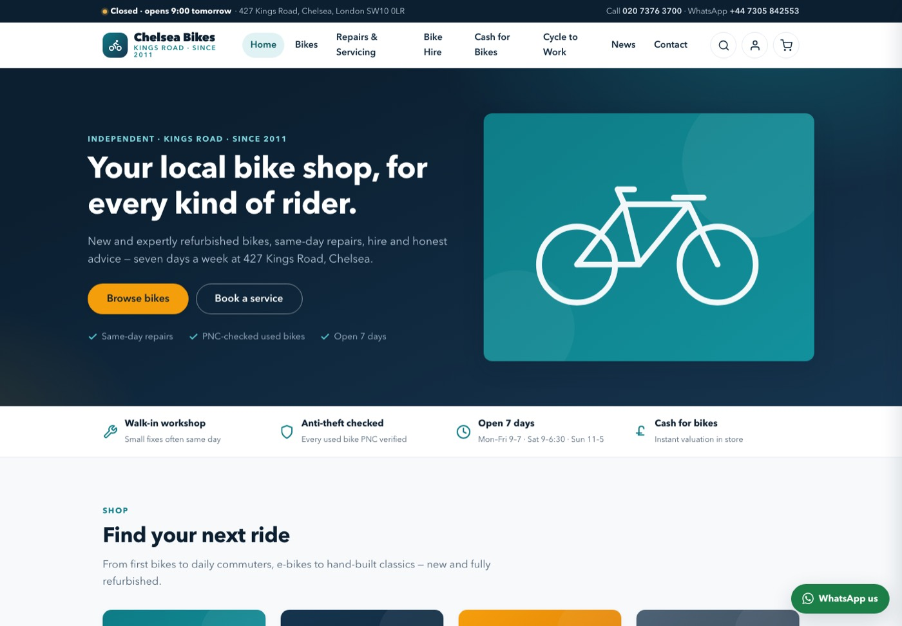

Exeter, UK · charlie@wuytack.net · github
My favourite video game of all time is Kingdom Rush. It is a niche indie strategy tower defence game. Here is my attempt at making something similar, no assets no engine, pure code - but with a deep sea theme.
Play it — free, no install, phones work.
One only flies to get from point A to point B. But I found that websites such as flightscanner did not account for the prices and time taken to get to and from the airport on either side. For example, a flight from Heathrow may cost £120 and from City £130. Of which normal flight trackers would recommend Heathrow as it is cheaper. However, taking into account where you live, at least for me, City would end up being cheaper.

Try the demo (demo fares, labelled as such — the real thing pulls live prices)
My local bike shop. I bought my bike there (second hand as I think most things are better value for money second hand). I also do some repairs there. However, sometimes I found using the website to not be very good and clean, potentially reducing customers and so revenue and so profits. Hence, I have created a website, that is yet to be pitched, that should increase customers and so forth.

Simply I think it would be fun to live bet on chess games. I am a fan of poker - it being about half skill and half luck - and I feel chess exchange would be more of an 80/20 split, with the luck landing on whether a player plays what you think is the best move.
A custom low power mode for macOS. I assumed low power mode capped my screen at 60Hz. I measured it and it doesn't — it throttles the CPU ~40% while the panel stays at 120Hz. So instead I move background tasks to the efficiency cores and leave whatever's in front at full speed.
Download (Apple Silicon, unsigned — right click → Open)
I may be going to the University of Exeter to study economics in September. To prepare I built a bot that watches the events that sell out fastest and alerts me the second tickets appear — it deliberately doesn't buy, it just gets me there first.